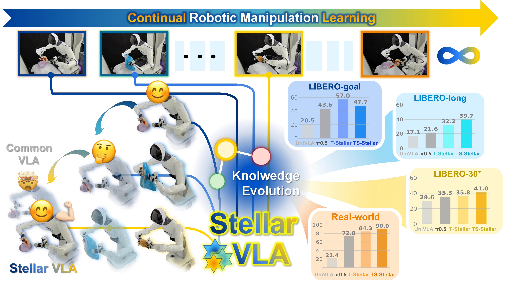
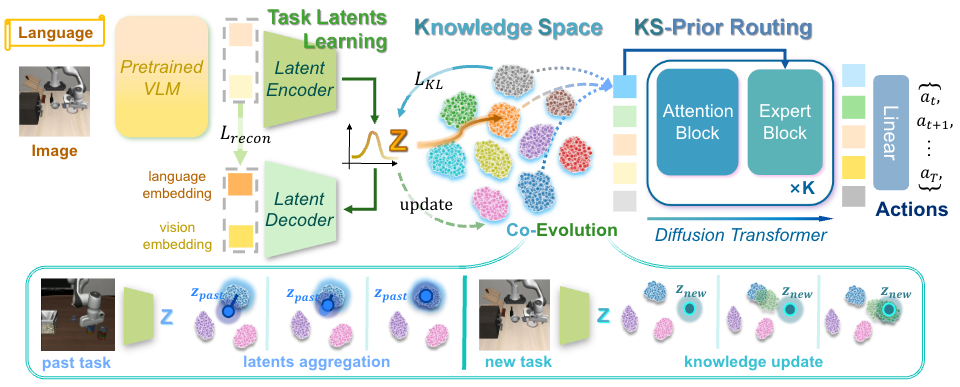
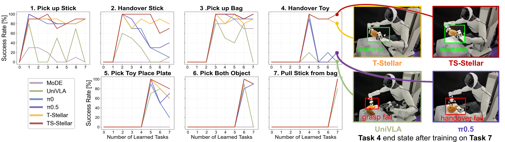
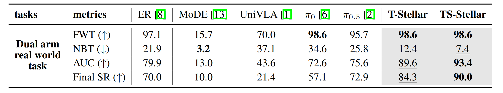
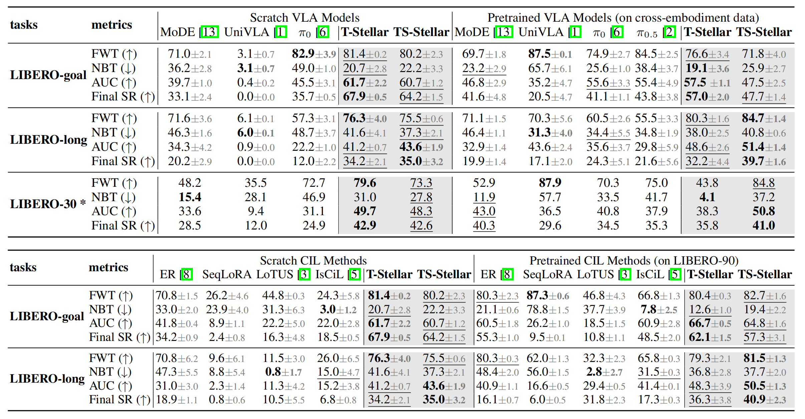
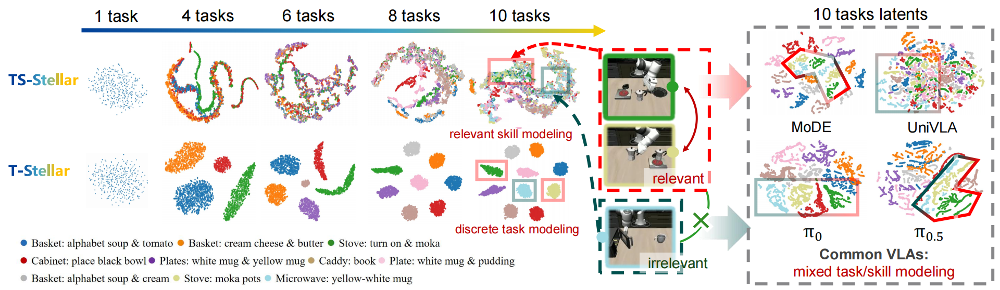

Continually Evolving Skill Knowledge in Vision Language Action Model
Abstract
Vision-language-action (VLA) models show promising knowledge accumulation ability from pretraining, yet continual learning in VLA remains challenging, especially for efficient adaptation. Existing continual imitation learning (CIL) methods often rely on additional parameters or external modules, limiting scalability for large VLA models. We propose Stellar VLA, a knowledge-driven CIL framework without increasing network parameters. Two progressively extended variants are designed: T-Stellar for flat task-centric modeling and TS-Stellar for hierarchical task–skill structure. Stellar VLA enables self-evolving knowledge learning by jointly optimizing task representations and a learned knowledge space. We propose a knowledge-guided expert routing mechanism conditioned on knowledge relation and Top-K semantic embeddings, enabling task specialization without increasing model size. Experiments on the LIBERO benchmark show that Stellar VLAs achieve strong performance among both VLA and CIL baselines, using only 1% data replay. Real-world evaluation on a dual-arm platform with distinct embodiment and scene configurations validates effective knowledge transfer. TS-Stellar excels in hierarchical manipulation, and visualizations reveal robust knowledge retention and task discovery.
Motivation

Lifelong VLA agents must learn new tasks without forgetting old ones. Existing CIL techniques help in smaller policies, but scaling them to large VLAs often incurs heavy training and storage costs from growing task-specific modules. Replay-based methods are promising, yet they leave a key question open: can continual learning improve through better task-skill knowledge modeling, not larger model growth? Our Stellar VLA answers this question by learning a Dirichlet-Process-based knowledge space and using knowledge-guided expert routing for adaptive specialization, enabling strong continual learning with lower replay dependence in both simulation and real-world manipulation.
Method

Figure 1. Overall architecture of Stellar VLA.
Our goal is to continually evolve task-relevant knowledge, enabling Stellar VLA to acquire new skills while mitigating forgetting of prior tasks. We use CLIP and a FiLM-conditioned ResNet to encode language and visual inputs, respectively. Task-centric representations z and the knowledge space are jointly learned through knowledge update and latent aggregation. The learned knowledge prior further guides the MoE action head for motion prediction.
Real-World Experiments
To further evaluate real-world effectiveness, we conduct dual-arm manipulation experiments across seven representative tasks: (1) Pick up Stick, (2) Handover Stick, (3) Pick up Bag, (4) Handover Toy, (5) Pick Toy Place Plate, (6) Pick Both Object, and (7) Pull Stick from Bag. These tasks cover grasping, handover, coordinated placement, and contact-rich interaction, providing a comprehensive benchmark for real-world generalization and policy robustness. Below videos present the performance of our method and π0.5 after completing continual learning across seven tasks, evaluated on all the tasks learned before. All videos are shown at 10x speed.
1. Pick up Stick
2. Handover Stick
3. Pick up Bag
4. Handover Toy
5. Pick Toy Place Plate
6. Pick Both Object
7. Pull Stick from Bag

Figure 2. Success rate curves on real-world manipulation tasks.

Table 1. Quantitative success-rate comparison in real-world experiments.
Simulation Results
We evaluate our models on the LIBERO benchmark, including LIBERO-goal, LIBERO-long, and LIBERO-30*, a 30-task subset of LIBERO-90 (see Appendix D.1 for construction), to assess performance under diverse goals, long-horizon reasoning, and multi-task settings. Demonstration data includes static and wrist camera observations, while actions contain end-effector poses and gripper states. To comprehensively evaluate continual learning capability, we compare our method against both advanced VLA baselines and classical robotic continual imitation learning approaches.

Table 2. Success-rate curves across LIBERO simulation benchmarks.
To illustrate continual skill evolution in Stellar VLA, we visualize the learned knowledge space on LIBERO-long. The t-SNE results show that T-Stellar forms clear task-level clusters, while TS-Stellar reveals shared structure through subskill-level connectivity. For example, deep and light green clusters partially overlap because both contain the shared subgoal "put moka on stove." In contrast, prior VLA baselines tend to either mix latent representations or fail to preserve meaningful task relationships in feature space.

Figure 3. t-SNE visualization of learned representations in simulation tasks.
BibTeX
@article{stellarvla2026,
title={Continually Evolving Skill Knowledge in Vision Language Action Model},
author={Anonymous},
journal={Under Review},
year={2026},
note={Code will be released soon}
}